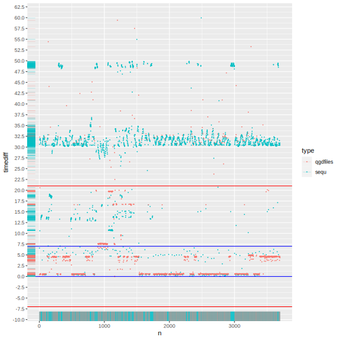
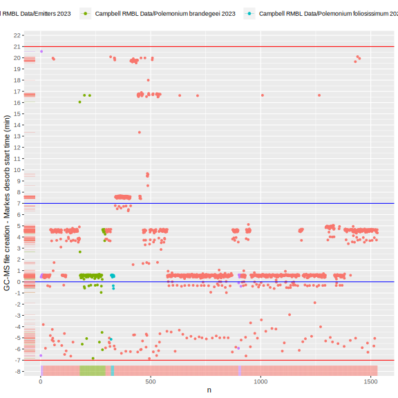
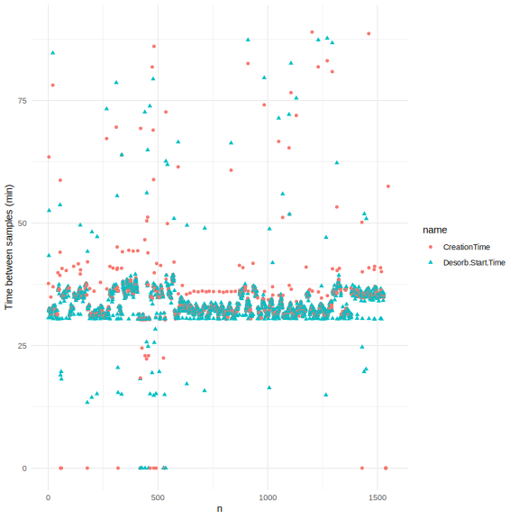
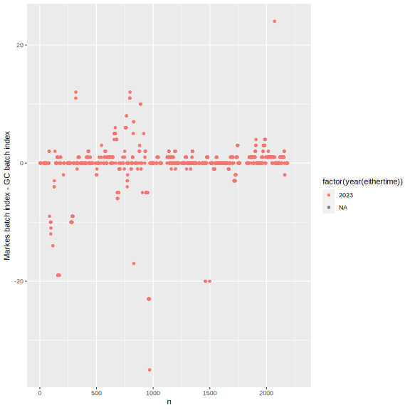
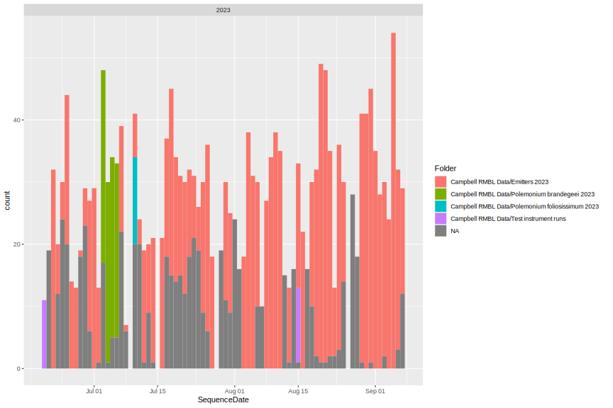
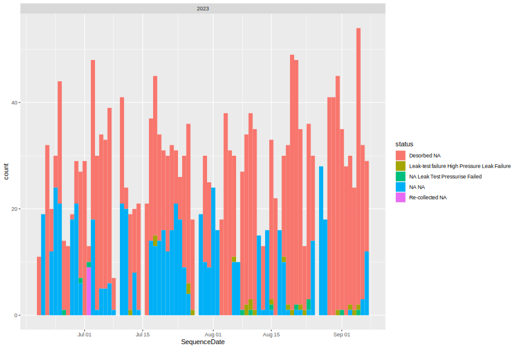

library(tidyverse)
library(knitr)
knitr::opts_chunk$set(comment="", cache=T, warning = F, message = F,
fig.path = "images/", dev="svglite", dev.args=list(fix_text_size=FALSE), fig.height=8, fig.width=8)
#source("markes_sequence.R") #generates the following rda file
filedate <- "230908" #update to YYMMDD date the file was copied off
load(paste0("output/markes_sequence", filedate,".rda"))sequ.file %>% count(fuzzy_n, year(eithertime)) %>%
kable(caption = "large count is result=NA from no Markes match, eithertime=NA are skips")| fuzzy_n | year(eithertime) | n |
|---|---|---|
| 1 | 2017 | 582 |
| 1 | 2018 | 1023 |
| 1 | 2019 | 1824 |
| 1 | 2021 | 1171 |
| 1 | 2022 | 1258 |
| 1 | 2023 | 2148 |
| 1 | NA | 309 |
| 2 | 2017 | 14 |
| 2 | 2018 | 2 |
| 2 | 2019 | 6 |
| 2 | 2022 | 1028 |
| 2 | 2023 | 2 |
| 6 | 2017 | 12 |
| 14 | 2019 | 14 |
| 658 | 2017 | 259 |
| 658 | 2018 | 42 |
| 658 | 2019 | 18 |
| 658 | 2021 | 18 |
| 658 | 2022 | 84 |
| 658 | 2023 | 237 |
#sequ.file %>% filter(fuzzy_n > 1, fuzzy_n < 100) %>% View()
nrow(sequ); nrow(qgdfiles); nrow(sequ.file) #TODO some duplicates created in the merge[1] 8844[1] 8043[1] 10051plot(y~ x, data=data.frame(x = tail(sort(qgdfiles$CreationTime - minutes(cd_offset)), 80), y = 1))
points(y~ x, data=data.frame(x = tail(sort(sequ$Desorb.Start.Time), 80), y = 1.02), col="blue")tibble(alltimes = sort(c(qgdfiles$CreationTime, sequ$Desorb.Start.Time)),
year = year(alltimes),
create_desorb = c(0,as.numeric(diff(alltimes), units="mins"))) %>%
mutate(n=row_number()) %>%
ggplot(aes(x=n, y=create_desorb, color=factor(year))) + geom_point(size=0.2) +
geom_hline(yintercept=c(0, cd_offset), color="blue") +
geom_hline(yintercept=c(cd_offset-cd_tolerance, cd_offset+cd_tolerance), color="red") +
scale_y_continuous(limits = c(0,60), n.breaks=30)
sequ.file %>% drop_na(create_desorb) %>%
mutate(n=row_number(), create_desorb=as.numeric(create_desorb, units="mins")) %>%
ggplot(aes(shape=factor(year(eithertime)), x=n, y=create_desorb, color=fct_lump_n(Folder,10))) +
geom_point() + labs(y="GC-MS file creation - Markes desorb start time (min)", shape="Year", color="Folder")+
geom_hline(yintercept=c(0,16), color="blue")
sequ.file %>% filter(CreationDate> as.POSIXct("2019-06-19")) %>%
select(CreationTime, Desorb.Start.Time) %>%
map_dfr(~ as.numeric(diff(.), units="mins")) %>% mutate(n = row_number()) %>%
pivot_longer(contains("Time")) %>%
ggplot(aes(x=n, y=value, color=name, shape=name)) +
geom_point() + ylim(c(0,90))+ theme_minimal()+ labs(y="Time between samples (min)")
sequ.file %>% arrange(eithertime) %>% mutate(n=row_number()) %>%
ggplot(aes(x=n, y=markes_GC, color=factor(year(eithertime)))) + geom_point() +
labs(y="Markes batch index - GC batch index")
sequ.file %>% drop_na(eithertime) %>%
ggplot(aes(x=SequenceDate, fill=fct_lump_n(Folder,10))) +
geom_histogram(binwidth=1) + facet_wrap(vars(year(eithertime)), ncol=1, scales="free_x") + labs(fill="Folder")
sequ.file %>% drop_na(eithertime) %>% filter(status !="Desorbed NA") %>%
ggplot(aes(x=SequenceDate, fill=status)) +
geom_histogram(binwidth=1) + facet_wrap(vars(year(eithertime)), ncol=1, scales="free_x")